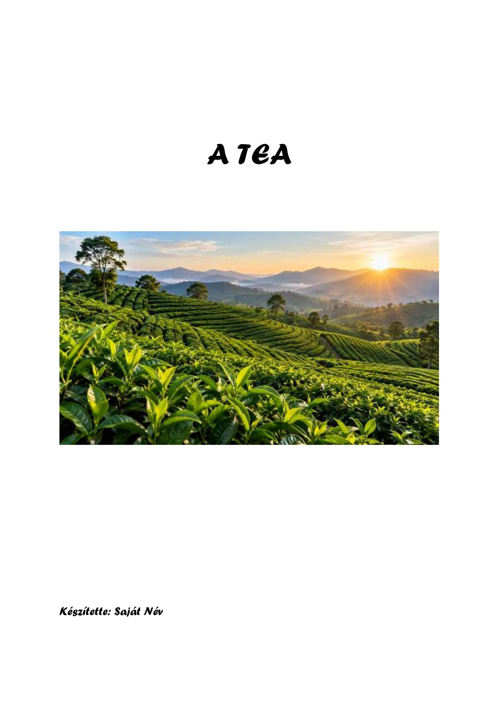
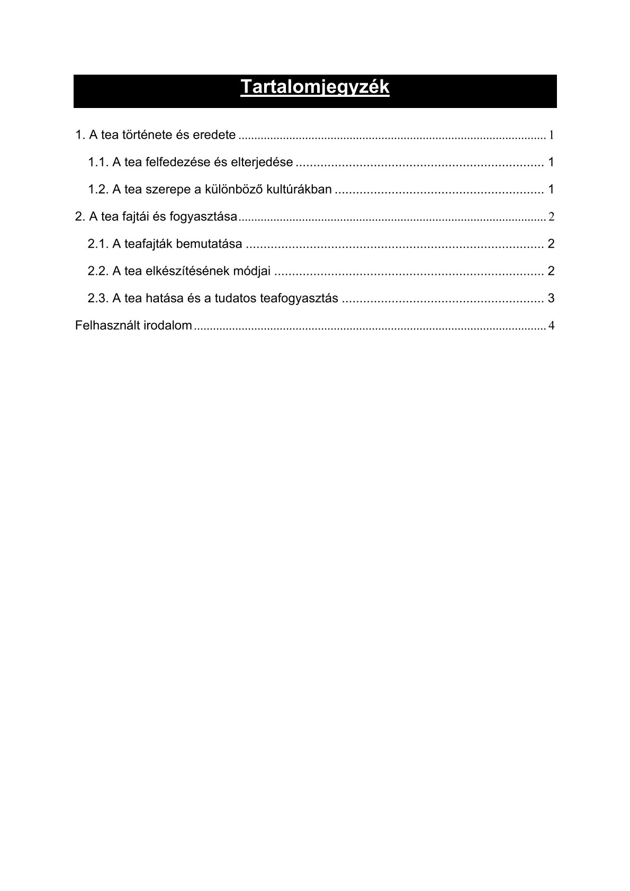
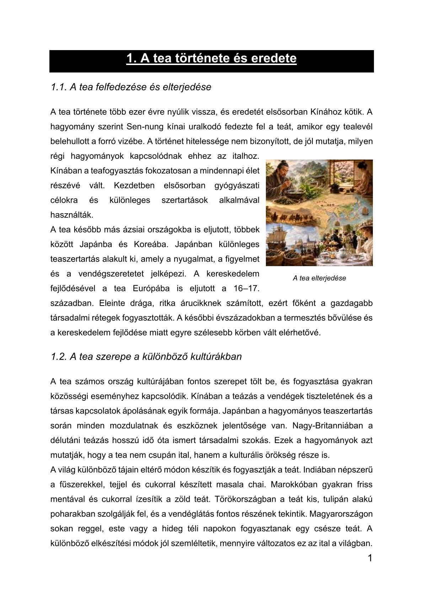
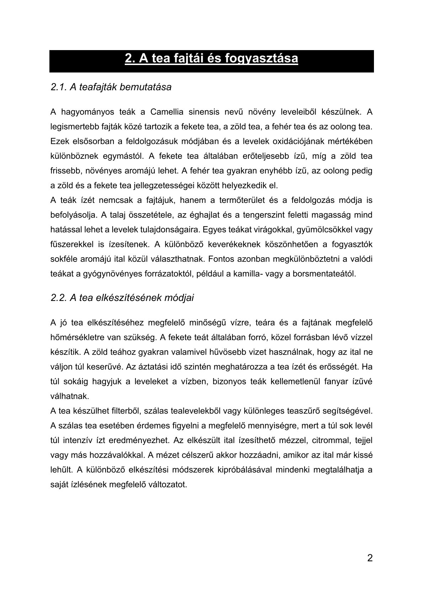
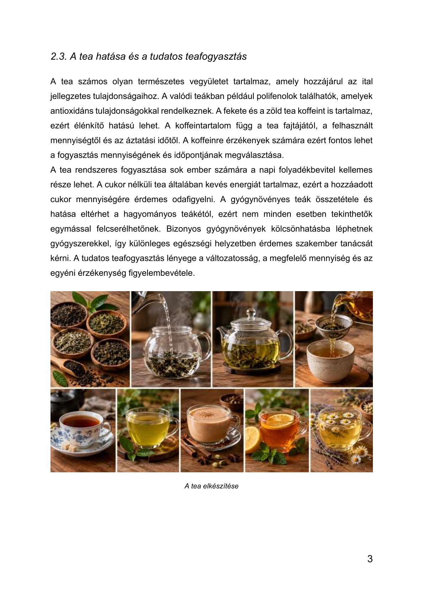
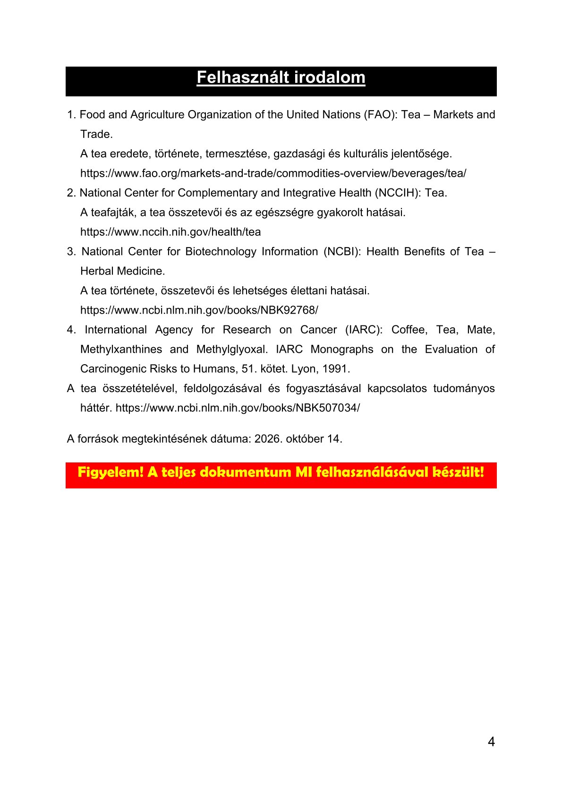

A TEA
1. A tea története és eredete
1.1. A tea felfedezése és elterjedése
A tea története több ezer évre nyúlik vissza, és eredetét elsősorban Kínához kötik. A hagyomány szerint Sen-nung kínai uralkodó fedezte fel a teát, amikor egy tealevél belehullott a forró vizébe. A történet hitelessége nem bizonyított, de jól mutatja, milyen régi hagyományok kapcsolódnak ehhez az italhoz. Kínában a teafogyasztás fokozatosan a mindennapi élet részévé vált. Kezdetben elsősorban gyógyászati célokra és különleges szertartások alkalmával használták.
A tea később más ázsiai országokba is eljutott, többek között Japánba és Koreába. Japánban különleges teaszertartás alakult ki, amely a nyugalmat, a figyelmet és a vendégszeretetet jelképezi. A kereskedelem fejlődésével a tea Európába is eljutott a 16–17. században. Eleinte drága, ritka árucikknek számított, ezért főként a gazdagabb társadalmi rétegek fogyasztották. A későbbi évszázadokban a termesztés bővülése és a kereskedelem fejlődése miatt egyre szélesebb körben vált elérhetővé.
1.2. A tea szerepe a különböző kultúrákban
A tea számos ország kultúrájában fontos szerepet tölt be, és fogyasztása gyakran közösségi eseményhez kapcsolódik. Kínában a teázás a vendégek tiszteletének és a társas kapcsolatok ápolásának egyik formája. Japánban a hagyományos teaszertartás során minden mozdulatnak és eszköznek jelentősége van. Nagy-Britanniában a délutáni teázás hosszú idő óta ismert társadalmi szokás. Ezek a hagyományok azt mutatják, hogy a tea nem csupán ital, hanem a kulturális örökség része is.
A világ különböző tájain eltérő módon készítik és fogyasztják a teát. Indiában népszerű a fűszerekkel, tejjel és cukorral készített masala chai. Marokkóban gyakran friss mentával és cukorral ízesítik a zöld teát. Törökországban a teát kis, tulipán alakú poharakban szolgálják fel, és a vendéglátás fontos részének tekintik. Magyarországon sokan reggel, este vagy a hideg téli napokon fogyasztanak egy csésze teát. A különböző elkészítési módok jól szemléltetik, mennyire változatos ez az ital a világban.
2. A tea fajtái és fogyasztása
2.1. A teafajták bemutatása
A hagyományos teák a Camellia sinensis nevű növény leveleiből készülnek. A legismertebb fajták közé tartozik a fekete tea, a zöld tea, a fehér tea és az oolong tea. Ezek elsősorban a feldolgozásuk módjában és a levelek oxidációjának mértékében különböznek egymástól. A fekete tea általában erőteljesebb ízű, míg a zöld tea frissebb, növényes aromájú lehet. A fehér tea gyakran enyhébb ízű, az oolong pedig a zöld és a fekete tea jellegzetességei között helyezkedik el.
A teák ízét nemcsak a fajtájuk, hanem a termőterület és a feldolgozás módja is befolyásolja. A talaj összetétele, az éghajlat és a tengerszint feletti magasság mind hatással lehet a levelek tulajdonságaira. Egyes teákat virágokkal, gyümölcsökkel vagy fűszerekkel is ízesítenek. A különböző keverékeknek köszönhetően a fogyasztók sokféle aromájú ital közül választhatnak. Fontos azonban megkülönböztetni a valódi teákat a gyógynövényes forrázatoktól, például a kamilla- vagy a borsmentateától.
2.2. A tea elkészítésének módjai
A jó tea elkészítéséhez megfelelő minőségű vízre, teára és a fajtának megfelelő hőmérsékletre van szükség. A fekete teát általában forró, közel forrásban lévő vízzel készítik. A zöld teához gyakran valamivel hűvösebb vizet használnak, hogy az ital ne váljon túl keserűvé. Az áztatási idő szintén meghatározza a tea ízét és erősségét. Ha túl sokáig hagyjuk a leveleket a vízben, bizonyos teák kellemetlenül fanyar ízűvé válhatnak.
A tea készülhet filterből, szálas tealevelekből vagy különleges teaszűrő segítségével. A szálas tea esetében érdemes figyelni a megfelelő mennyiségre, mert a túl sok levél túl intenzív ízt eredményezhet. Az elkészült ital ízesíthető mézzel, citrommal, tejjel vagy más hozzávalókkal. A mézet célszerű akkor hozzáadni, amikor az ital már kissé lehűlt. A különböző elkészítési módszerek kipróbálásával mindenki megtalálhatja a saját ízlésének megfelelő változatot.
2.3. A tea hatása és a tudatos teafogyasztás
A tea számos olyan természetes vegyületet tartalmaz, amely hozzájárul az ital jellegzetes tulajdonságaihoz. A valódi teákban például polifenolok találhatók, amelyek antioxidáns tulajdonságokkal rendelkeznek. A fekete és a zöld tea koffeint is tartalmaz, ezért élénkítő hatású lehet. A koffeintartalom függ a tea fajtájától, a felhasznált mennyiségtől és az áztatási időtől. A koffeinre érzékenyek számára ezért fontos lehet a fogyasztás mennyiségének és időpontjának megválasztása.
A tea rendszeres fogyasztása sok ember számára a napi folyadékbevitel kellemes része lehet. A cukor nélküli tea általában kevés energiát tartalmaz, ezért a hozzáadott cukor mennyiségére érdemes odafigyelni. A gyógynövényes teák összetétele és hatása eltérhet a hagyományos teákétól, ezért nem minden esetben tekinthetők egymással felcserélhetőnek. Bizonyos gyógynövények kölcsönhatásba léphetnek gyógyszerekkel, így különleges egészségi helyzetben érdemes szakember tanácsát kérni. A tudatos teafogyasztás lényege a változatosság, a megfelelő mennyiség és az egyéni érzékenység figyelembevétele.
Felhasznált irodalom
-
Food and Agriculture Organization of the United Nations (FAO): Tea – Markets and Trade.
A tea eredete, története, termesztése, gazdasági és kulturális jelentősége.
https://www.fao.org/markets-and-trade/commodities-overview/beverages/tea/ -
National Center for Complementary and Integrative Health (NCCIH): Tea.
A teafajták, a tea összetevői és az egészségre gyakorolt hatásai.
https://www.nccih.nih.gov/health/tea -
National Center for Biotechnology Information (NCBI): Health Benefits of Tea – Herbal Medicine.
A tea története, összetevői és lehetséges élettani hatásai.
https://www.ncbi.nlm.nih.gov/books/NBK92768/ -
International Agency for Research on Cancer (IARC): Coffee, Tea, Mate, Methylxanthines and Methylglyoxal. IARC Monographs on the Evaluation of Carcinogenic Risks to Humans, 51. kötet. Lyon, 1991.
A tea összetételével, feldolgozásával és fogyasztásával kapcsolatos tudományos háttér. https://www.ncbi.nlm.nih.gov/books/NBK507034/
Dokumentum oldalak





